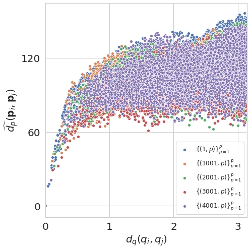
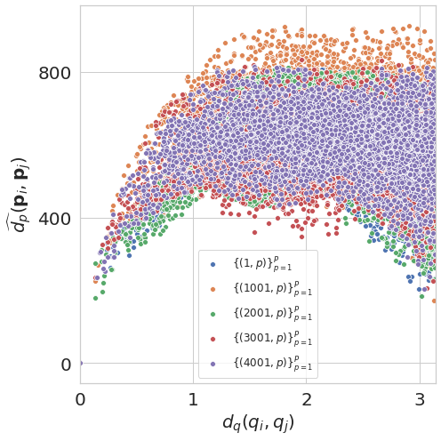

Euclidean Distance as a Baseline¶
ROOT_DIR = "../.."
from numba import cuda
cuda.select_device(0)
cuda.close()
import os
import h5py
import numpy as np
import matplotlib.pyplot as plt
import sys
sys.path.append(ROOT_DIR)
from cryoem.projections import RotationMatrix
from cryoem.conversions import euler2quaternion, d_q, euler2quaternion
from cryoem.plots import plot_euclidean_dPdQ
import matplotlib.pyplot as plt
import pandas as pd
import seaborn as sns
from skimage.transform import resize
Warning: To use the exr data format, please install the OpenEXR package following the instructions detailed in the README at github.com/tensorflow/graphics. Warning: To use the threejs_vizualization, please install the colabtools package following the instructions detailed in the README at github.com/tensorflow/graphics.
import tensorflow as tf
from tensorflow.python.client import device_lib
print(device_lib.list_local_devices())
[name: "/device:CPU:0"
device_type: "CPU"
memory_limit: 268435456
locality {
}
incarnation: 1620013145582151514
, name: "/device:XLA_CPU:0"
device_type: "XLA_CPU"
memory_limit: 17179869184
locality {
}
incarnation: 10212685979488364815
physical_device_desc: "device: XLA_CPU device"
, name: "/device:XLA_GPU:0"
device_type: "XLA_GPU"
memory_limit: 17179869184
locality {
}
incarnation: 7701096635908222728
physical_device_desc: "device: XLA_GPU device"
, name: "/device:GPU:0"
device_type: "GPU"
memory_limit: 3417767936
locality {
bus_id: 1
links {
}
}
incarnation: 3637279398076591738
physical_device_desc: "device: 0, name: GeForce GTX 1050 Ti with Max-Q Design, pci bus id: 0000:01:00.0, compute capability: 6.1"
]
Distance function¶
def d_p(in1, in2):
in1 = in1.reshape((len(in1), -1))
in2 = in2.reshape((len(in2), -1))
return tf.norm(in1-in2, ord='euclidean', axis=1)
Euclidean distance on Full-coverage for 5j0n (asymmetric protein)¶
# full sphere coverage with non-uniform distribution
projections_filename = "../../data/5j0n_full.h5"
# load structures
data_full_5k = h5py.File(projections_filename, 'r')
angles_true = np.array(data_full_5k['Angles'], dtype=np.float32)
projections = np.array(data_full_5k['Projections'], dtype=np.float32)
label = "Full-coverage, Euler uniform"
print(f"{angles_true.shape[0]} projections of images with dimension {projections.shape[1:]} pixels")
print(f"{angles_true.shape[0]} sets of {angles_true.shape[1]} ground truth angles of corresponding projection images")
5000 projections of images with dimension (116, 116) pixels
5000 sets of 3 ground truth angles of corresponding projection images
plot_euclidean_dPdQ(angles_true, projections, d_p)

Euclidean distance on Full-coverage for 5a1a (symmetric protein)¶
# full sphere coverage with non-uniform distribution
projections_filename = "../../data/5a1a_full.h5"
# load structures
data_full_5k = h5py.File(projections_filename, 'r')
angles_true = np.array(data_full_5k['Angles'], dtype=np.float32)
projections = np.array(data_full_5k['Projections'], dtype=np.float32)
label = "Full-coverage, Euler uniform"
print(f"{angles_true.shape[0]} projections of images with dimension {projections.shape[1:]} pixels")
print(f"{angles_true.shape[0]} sets of {angles_true.shape[1]} ground truth angles of corresponding projection images")
5000 projections of images with dimension (275, 275) pixels
5000 sets of 3 ground truth angles of corresponding projection images
dim = 116
projections_new = np.zeros((len(projections), dim, dim))
for i in range(len(projections)):
p = projections[i]
p = resize(p, (dim, dim))
projections_new[i] = p
projections = projections_new.copy()
plot_euclidean_dPdQ(angles_true, projections, d_p)
